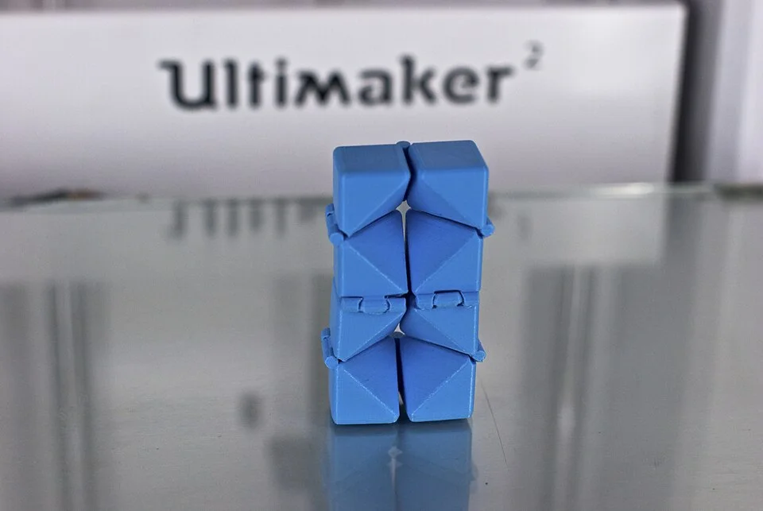
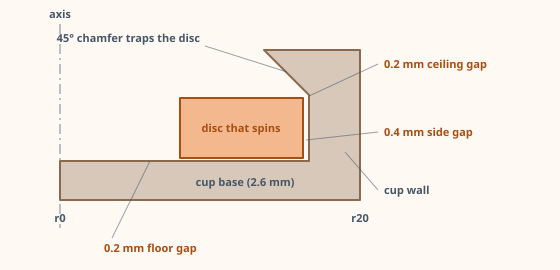

Where must air remain?
Point to the radial gap beside the disc and the layer gaps above and below it. A gap in the model does not guarantee a gap in the sliced toolpath.
Try the editable sceneFirst successful moving part · one printer test, one spinner
Start by changing the gap in the editable scene below. Then print a small clearance comb, measure which slots actually open on your printer, and use that evidence to build a captured spinner. The six hour spiral cone is an optional extension after the disc turns.
Point to the radial gap beside the disc and the layer gaps above and below it. A gap in the model does not guarantee a gap in the sliced toolpath.
Try the editable scenePrint the comb flat with supports off. Record the smallest slot that is visibly open and flexes freely; inspect the slicer preview if none survive.
Make the clearance combModel two separate solids, check all three gaps in the slicer preview, and print with supports off. Show that the disc turns while it stays captured.
Make the captured spinnerChoose your level: Younger makers can predict, adjust the browser model, and compare teacher-printed samples. Middle grades can measure the comb and model the cup in Tinkercad. Older students can construct the Blender cross-section, revise from print evidence, and explain the geometry.
The same outer ring behaves differently as the radial gap changes.


Use this production path after the editable scene. Finish when the disc turns freely inside its cup and you can explain the three measured gaps.
Plan
Three builds, one idea
A 3D printer places lines of plastic layer by layer. It has no idea what a hinge is. If the deposited lines touch, two intended parts can fuse. Your job is to design a gap, confirm that the slicer preserves it, and test whether the printed parts really move.
The first two builds complete the core lesson. The spiral cone adds twist, Boolean construction, and a long print for makers ready to extend it.
Six slots, from 0.15 mm to 0.5 mm, cut in one Boolean. Prints in ten minutes and tells you the one number the rest of this lesson depends on.
Boolean · 10 min printA disc that spins inside a cup, printed as one piece. You draw the clearance straight into a cross-section and revolve it with the Screw modifier.
Screw revolve · 40 min printApply the measured fit to a twisted-star cone and its sleeve. Push the tip and the cone spins down through the sleeve.
Array + Simple Deform + Boolean · 6 hr printPick your tool
Adds and subtracts shapes from a fixed library — which is all Builds 01 and 02 need, and it will never let you get the units wrong. The spiral cone needs its Codeblocks mode for the twist, because the editor cannot twist a shape.
Revolves a cross-section into a solid and twists any shape smoothly, so all three builds happen in one place. The price is that you have to tell it you are working in millimetres.
Every build below carries both paths — pick a tab and follow it. The design numbers never change; only the clicks do.
Gap
The one measurement that matters
Designers say "leave 0.4 mm clearance" as if a gap were a gap. It is not. A gap between two walls standing side by side is a slot the nozzle has to drive around. A gap between one part and the part above it is a ceiling the next layer has to fly across. Those two situations fail in opposite directions, so they get different numbers.
A cross-section of two neighbouring walls, drawn bead by bead
Each rounded block is one extruded bead. A bead is always a little wider than the nozzle that made it — that spread is what welds parts together.
Comb
Build 01 · measure your own machine
Nozzle, filament, slicer settings, and first-layer squish affect the real minimum clearance. This open-slot comb is a quick screening test: it tells you which narrow slots your printer can preserve. A captured spinner may need a larger gap because its parts have more contact area and a hidden ceiling.
Blender path
Open Properties Editor → Scene → Units. Unit System: Metric, Unit Scale: 0.001, Length: Millimeters. Now typing 50 into a dimension field means 50 mm, and your STL will export at the size you think it is.
Shift+A → Mesh → Cube. In the N sidebar set Dimensions to 50 x 24 x 3 mm and Location Z to 1.5 mm so it sits on the ground plane. Then Ctrl+A → Scale.
Add a Cube with Dimensions 0.15 x 16 x 5 mm at Location (−20, −4, 1.5). Shift+D to duplicate it five times, moving each to X = −12, −4, 4, 12, 20 and setting its X dimension to 0.2, 0.25, 0.3, 0.4, and 0.5 mm. Apply scale to every one of them.
Select all six cutters, Ctrl+J to join them into a single object. Select the plate, then Properties Editor → Modifiers → Add Modifier → Generate → Boolean, Operation: Difference, Object: the joined cutters. One modifier, six slots.
Export STL, slice at 0.2 mm layers with supports off, and print. Hold it to a light: find the narrowest slot that is open and whose finger flexes freely. Record it as this setup's open-slot result, then verify the enclosed spinner separately.
Tinkercad path
New 3D design, then drag the Ruler out of the right-hand toolbar onto the workplane. Every shape you select now shows editable width, length, height, and position boxes — all in millimetres, which is what makes Tinkercad immune to the unit-scale trap.
Drag a Box onto the workplane and type its size into the dimension boxes: 50 wide, 24 long, 3 high.
Drag a second Box, size it 0.15 x 16 x 5, and click Hole in the Inspector — it turns transparent. Slide it so it crosses the front edge of the plate and stops 8 mm short of the back, leaving a spine.
Ctrl+D five times. Set each copy 8 mm further along X and change only its width: 0.2, 0.25, 0.3, 0.4, 0.5. At 0.15 mm the hole is thinner than the line drawn on screen — trust the number box, not your eyes.
Select everything (Ctrl+A) and press Ctrl+G. In Tinkercad, Group is the Boolean: solids merge, holes subtract, all in one step.
Export → .STL, slice at 0.2 mm with supports off, and print flat. Record the narrowest slot that is open and flexes freely. Use it to inform, then physically test, your captured-spinner design.
Revolve
Build 02 · parts inside parts
Round parts are not modelled by pushing vertices around in 3D. You draw a flat outline — the cross-section of the part, measured from the axis outward — and spin it. In Blender that is the Screw modifier. Learn it on a disc captured inside a cup, printed as one piece, spinning on the first try — the same nested-parts idea the spiral cone scales up to two full-size pieces.
Here is the whole design. Read it as a slice through the middle: the left edge is the axis, and every measurement is a radius.

Blender path
| Part | X (radius) | Z (height) | What it is |
|---|---|---|---|
| Cup | 0 | 0 | Centre of the base, on the bed |
| Cup | 20 | 0 | Outside edge of the base |
| Cup | 20 | 10 | Top of the outer wall |
| Cup | 13.6 | 10 | Lip — narrower than the disc, so it cannot escape |
| Cup | 16.6 | 7.0 | Ceiling of the groove, at 45° so it self-supports |
| Cup | 16.6 | 2.6 | Outer wall of the groove |
| Cup | 0 | 2.6 | Floor the disc spins on |
| Disc | 8 | 2.8 | Finger hole, 0.2 mm above the floor |
| Disc | 16.2 | 2.8 | Rim, 0.4 mm inside the groove wall |
| Disc | 16.2 | 6.8 | Top of the rim, 0.2 mm under the groove ceiling |
| Disc | 8 | 6.8 | Back to the finger hole |
Add a Plane, Tab into Edit Mode, select all, then X → Only Faces. You are left with four vertices joined by four edges — a closed outline the Screw modifier can sweep into a surface.
Select one vertex at a time and type its X and Z from the table into the N sidebar. For the cup, select an edge and press E to extrude the extra vertices until all seven are placed and the loop closes.
Properties Editor → Modifiers → Add Modifier → Generate → Screw. Axis: Z, Angle: 360°, Screw: 0 mm, Steps: 64, and turn on Merge Vertices so the seam closes into a watertight surface.
Four vertices, same modifier, same settings. Leave both objects in the scene, exactly where they sit. You are not going to cut anything — the air between them is already the design.
Supports off. The disc's first layer prints across 0.2 mm of air over the cup's floor, lands, and cools without bonding. That is the whole trick.
Tinkercad path
| Shape | Size (mm) | Height above workplane | Solid or hole |
|---|---|---|---|
| Cylinder | Ø40 x 10 high | 0 | Solid — the blank |
| Cylinder | Ø33.2 x 4.4 high | 2.6 | Hole — the groove |
| Cone | Ø33.2 x 16.6 high | 7.0 | Hole — the 45° ceiling |
| Cylinder | Ø32.4 x 4 high | 2.8 | Solid — the disc |
| Cylinder | Ø16 x 4 high | 2.8 | Hole — the finger hole |
Drag in a Cylinder and set Sides to 64 in the Inspector before you size it. Tinkercad's default 20-sided cylinder is a visible polygon, and a polygonal disc grinds instead of spinning.
Size the cylinder Ø40 x 10. Add a second cylinder Ø33.2 x 4.4, click Hole, use Align to centre it on the blank, and raise it 2.6 mm above the workplane.
Add a Cone, size it Ø33.2 x 16.6 high, make it a Hole, centre it, and raise it 7.0 mm. A cone whose radius equals its height has 45° sides — so this one cut gives you a self-supporting ceiling and leaves a Ø27.2 lip at the top.
Select the blank and its two holes, then Ctrl+G. Do this before the disc exists. If the disc is in the selection when those holes fire, they will eat straight through it.
Cylinder Ø32.4 x 4 with a Ø16 hole through the middle, grouped together, raised 2.8 mm, then aligned to the cup's centre. Leave it as its own object so you can still nudge it.
Ø33.2 − Ø32.4 leaves 0.4 mm all the way around. 2.8 − 2.6 leaves 0.2 mm underneath. 7.0 − 6.8 leaves 0.2 mm above. Tinkercad will not warn you about any of these — the numbers are the only check you get.
Want to check your numbers, or print one without modelling it? The same cup and disc are a part in Forge: change the sizes and it checks every gap against your class clearance. Forge also has a fidget spinner and a print-in-place hinge built on the same trick.
Test
First print · close the evidence loop
Check the cup and disc at the bottom, middle, and lip. They must remain separate outlines. Check that the finger hole and 0.2 mm floor and ceiling spaces remain open. If the slicer fills a gap, revise the model before printing.
Keep the cup flat on the bed. Verify the outer diameter in the slicer is 40 mm. Use the same material, nozzle, layer height, and first-layer setup as the comb. Keep both solids in their modeled positions.
Once cool, hold the cup and turn the disc with a finger. It should rotate while the lip keeps it in the cup. If it sticks, record where; inspect for a first-layer weld before increasing every gap.
Keep the printer setup with your measurements so you can repeat or compare the test. This record stays in this browser.
Continue here after the captured spinner works. The twisted cone has more contact area and a longer print; its clearance needs its own preview and physical test.
Design
Design it before you model it
Pick up the real fidget and you are holding two parts. Inner is a cone carved into a nine-fin star that twists as it rises. Outer is a sleeve: the same cone with a slightly fatter copy of that twisted star cut out of it. Because both stars twist at the same rate, the cone cannot slide straight: the only path that keeps every fin inside its slot is down-and-around together, like a screw. So a straight push on the tip comes out as spin — the cone turns its way through and drops out the bottom. Feed it back in and do it again.
Both parts are cut from one cone, so they print nested, already assembled, separated by the designed clearance. Drag the sliders to test geometric constraints such as lean, gap, and wall thickness. Then inspect the actual sliced toolpaths and make a physical test; this lab cannot predict whether the printed parts will move.
Drag to orbit · orange is Inner, teal is Outer · every number here is a number you type into Blender
This browser cannot start WebGL, so the 3D preview is off — the design numbers and verdicts below still update as you change the sliders.
The three rules the lab is checking
Can it hold itself up?
117° through an 82 mm sleeve is 1.43° per millimetre. At the fin tips, 32.5 mm out, that leans the faces 38.5° from vertical — inside the 45° rule, so every layer lands on the one below. Twist harder or reach further and the tips cross 45°.
Will the two pieces separate?
The clearance is measured flat, across the slice, but the fin faces lean. So 0.75 mm of clearance leaves only 0.59 mm of real air at the tips — about one and a half beads. That is why the reference pair uses 0.75 mm, not the 0.4 mm your comb passed.
Will the sleeve hold together?
Fin reach stops 8 mm short of the base, so the bottom 23 mm of the sleeve is a solid collar that ties its nine fingers together. And between the slots, near the core, each finger still needs two beads of plastic — too many or too wide fins and the fingers vanish.
Spiral
Build 03 · the boss fight
Build it the way it works. Make a star — a round core with nine fins — and twist it up the axis. Make a second star the clearance fatter everywhere and twist it exactly the same way. Keep what is inside both the cone and the first star: that is Inner. Cut the second star out of the cone: that is Outer. You can also inspect both pieces live on the MakerBot bed in Forge.
Blender path
Shift+A → Mesh → Cylinder. Vertices 64, Radius 11.5 mm, Depth 112 mm, Location Z 55 mm. It runs from 1 mm below the bed to 1 mm above the cone's tip, so every later cut passes cleanly through it.
Add a Cube and set its Dimensions to X 26.75, Y 6, Z 112 mm, Location X 19.125, Z 55. It reaches from inside the core out to 32.5 mm — the fin reach. For the round tip of the reference pair, select the two outer vertical edges and Ctrl+B bevel them by 2.9 mm with 8 segments.
Add an Empty at the origin and set its Rotation Z to 40° (360 ÷ 9). On the fin, Add Modifier → Generate → Array: Count 9, Relative Offset off, Object Offset on, Object: the Empty. Apply it, then Boolean Union the fins into the core and apply. Name the result Star.
Repeat steps 1–3 with every number grown by the 0.75 mm clearance: core radius 12.25, fin Y 7.5, fin X 27.5 at Location X 19.5 (reach 33.25), bevel 3.65 mm. Same depth, same location. Name it Slot.
Select Star, Tab into Edit Mode, hover a vertical edge, press Ctrl+R and type 112 before clicking — one ring every millimetre, all the way round. Do the same on Slot. A twist can only bend a mesh at its vertices; a fin with no rings in it would stay straight.
Add Modifier → Deform → Simple Deform, mode Twist, Axis Z, Angle 160° — the lab's 1.43°/mm over the star's 112 mm. Give Slot the identical modifier and apply both. The twist only lines up because both stars are the same height, at the same place, twisted by the same angle: change one number on one star and the cone will jam.
Add a Cone: Vertices 96, Radius 1 41 mm, Radius 2 4 mm, Depth 110 mm, Location Z 55. Add a second Cone for the sleeve: Radius 1 41, Radius 2 13.45, Depth 82, Location Z 41. Both lose 0.336 mm of radius per millimetre of height — one cone surface, cut off at two heights.
On the tall cone, Add Modifier → Generate → Boolean, Solver Exact, Operation Intersect, Object Star, apply: that is Inner. On the sleeve cone, Boolean Difference with Slot, apply: that is Outer. Hide the stars and save as spiral-cone-fidget.blend.
Tinkercad path
Tinkercad's 3D editor adds and subtracts shapes from a fixed library. It can make a star and it can make a cone, but it cannot twist anything — so build the straight-fin version in the editor first (it works: the cone slides through without spinning), then use Codeblocks to stack thin star slices into a twist.
A Cylinder Ø23, 112 tall, lowered 1 mm into the workplane. Add a Box 27 long × 6 wide × 112 tall reaching from the centre out to 32.5 mm. Duplicate it with Ctrl+D, rotate the copy 40° about the centre, then press Ctrl+D seven more times — Tinkercad repeats the rotation. Group everything: that is the Star.
The same thing grown by the clearance: Cylinder Ø24.5, boxes 7.5 wide reaching to 33.25 mm. Group it: that is the Slot.
Tinkercad's Cone shape takes a base radius, a top radius, and a height. Inner cone: 41 → 4, 110 tall. Sleeve cone: 41 → 13.45, 82 tall. Turn Sides up to the maximum.
Set the Slot to Hole, select it with the sleeve cone, and Group. That is Outer.
Tinkercad has no intersect, so make a mould: a Box bigger than the cone, grouped with the inner cone set as a Hole, leaves a block with a cone-shaped hollow. Set that whole mould to Hole and group it with the Star — everything outside the cone is cut away. That is Inner.
In Create → Codeblocks, loop i from 0 to 111. Each pass, build one 1 mm star slice (a Cylinder and nine Boxes, 1 mm tall), rotate it by 1.43 · i degrees about Z, then move it up i − 1 mm. Run the same loop for the slot star. Send both results to the 3D editor and use them in steps 4 and 5 in place of the straight stars.
Check, export, slice
Blender ships with a print checker most people never turn on. Enable it once and it will tell you, before you waste filament, whether your mesh is a real solid and whether anything on it is too thin or too steep to print.
Edit → Preferences → Add-ons, search for "3D Print", and enable 3D Print Toolbox (older builds list it as "Mesh: 3D-Print Toolbox"). It appears as a 3D-Print tab in the N sidebar.
Set Thickness to 0.8 mm and Overhang to 45°, then press Check All. You want zero non-manifold edges and zero intersections. Anything reported gets clicked — the toolbox selects the exact faces at fault.
Select Inner, File → Export → STL (.stl) with Scale 1.00 and Selection Only ticked, saved as spiral-cone-inner.stl. Do the same for Outer. Don't move either first: they share one origin, so the slicer loads them nested. Then verify: Inner reads about 65 × 65 × 110 mm and Outer 82 × 82 × 82 mm. If one arrives as a 0.08 mm speck, your scene unit scale was never set to 0.001.
Nested: add both files to one build plate without moving them (turn off auto-arrange) and they print already assembled — the print-in-place way, and it also lets you print the pieces in two colours. Apart: lay them side by side, print, then feed the cone into the bottom of the sleeve and twist it home. Both work; nested is the one that tests your clearance.
0.2 mm layers, 3 walls, 15% infill, supports off, seam position Random, cooling fan 100% after the third layer, PLA at the cool end of its range. Vase mode stays off — it would delete the core and the fins.
Drag the layer slider to the middle of the sleeve. You should see the star of the cone and the fingers of the sleeve as separate outlines, with a dark line of air all the way round every fin. A fin that merges into a finger means the clearance did not survive slicing — go back and widen it by 0.1 mm.
If you modelled in Tinkercad
Fix
Read the failure, then fix the number
The clearance never reached the toolpath. Check the slicer preview at mid-height, then grow the slot star by another 0.1 mm — remember the twist costs you the cosine of the lean at the fin tips.
The fin star and the slot star were twisted differently — different heights, locations, ring counts or angles. Rebuild the slot from the fin star's numbers plus the clearance and twist both with one identical modifier.
The fins reach the outside of the base, so there is no solid collar. Pull the fin reach in until the bottom 15–25 mm of the sleeve is a full ring.
Too many fins, or fins too wide, for that core: the fingers between the slots got thinner than two beads near the middle. Drop a fin, narrow them, or grow the core.
The cone's cross-section gets tiny above the sleeve, so layers stack before they cool. Enable minimum layer time, run the fan at 100%, and drop the top-section speed.
Scene unit scale. Set Scene → Units → Unit Scale 0.001, Length: Millimeters, re-export, and re-check the dimensions in the slicer every time.
Check the arithmetic before you blame the printer. Ø33.2 − Ø32.4 must leave 0.4 mm, and 2.8 − 2.6 must leave 0.2 mm. Tinkercad lets two solids overlap by a tenth of a millimetre without a word, and Group then welds them into one body.
The stair step at the fin tips is bigger than the clearance. Grow the slot star to 1.0 mm of clearance, or make the slices thinner — the step is fin reach × the slice's turn in radians.
Usually the Boolean. Apply scale on both objects (Ctrl+A → Scale), switch the solver to Exact, and re-cut. Stray loose edges left over from a profile also count — select all in Edit Mode and use Mesh → Clean Up → Delete Loose.
Ship
Exit ticket
Definition of done
Take it further
Mark the tip, drop the cone through, and measure how far it turned. Twist rate × distance dropped should predict it — find out how close it gets.
Give both stars a −160° twist. Print a left-handed and a right-handed pair and try to swap their cones.
Drop both cones' Vertices from 96 to 6. The same fidget with flat facets feels completely different in the hand.